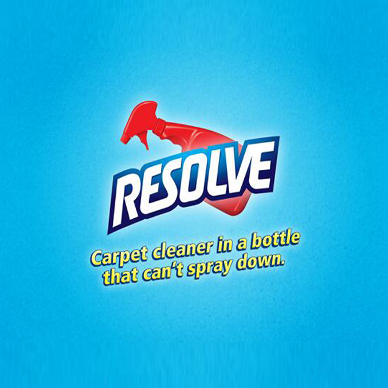

Chip-Pan Fires, & Other Nostalgia-Inducing 1980s Disasters
EVER since the health-and-safety brigade got their way, British lifespans have vastly increased at the price of our freedom. What happened to these dangers?
Smoking in bed
In days before smokers were disgustingly discriminated against, falling asleep with an ashtray on your lap and a lit cigarette in hand was the only respectable way to end the day. Yes, you'd wake up with a bed full of ash and a smouldering duvet, but what was wrong with that? Nobody minded.
Chip-Pan fires
Every British home in the 1980s smelt of fags and fryer oil. There was nothing more reassuring than coming home from school to the aroma of cooking chips, and it was small price to pay that your kitchen could at any moment be consumed in flames from the vat of bubbling oil your mum regularly left unattended.Dangerous playgrounds
Back before schools became little more than snowflake factories, children were allowed to really play. Rather than being covered in soft, spongy foam, playgrounds used to be made of concrete and covered in broken glass and dog shit. Kids these days will never know the fun of breaking your wrist falling off a ten-foot high slide with no safety barriers.Stray dogs
These days, nobody can see a stray dog without plastering all over social media as a 'lost puppy' before getting it microchipped and re-homed with its 'forever family'. Back in the 80s they used to run around in packs, snapping viciously at children and old people, until the council rounded them up and humanely gassed them.Shoddy Electrical jobs by your Dad
Until the early 90s, electrical appliances weren't sold with plugs attached, which gave your dad the opportunity to do such a bad job fitting them that he electrocuted himself, cut power for six streets and burned the house down. But at least the risk of death livened up the hoovering."

